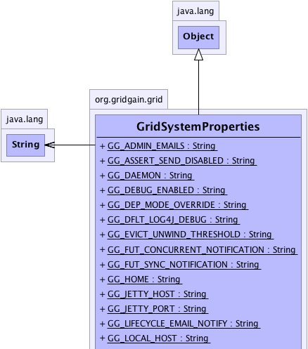
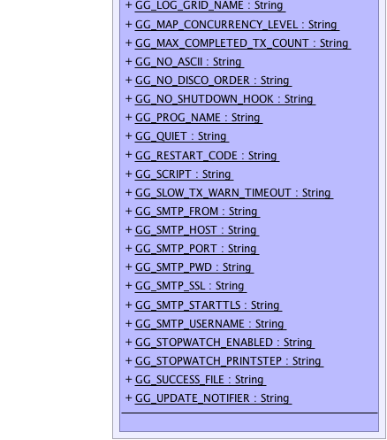

org.gridgain.grid.GridSystemProperties
org.gridgain.grid.GridSystemProperties
|
GridGain™ 3.6.0c
Community Edition |
|||||||||
| PREV CLASS NEXT CLASS | FRAMES NO FRAMES | |||||||||
| SUMMARY: NESTED | FIELD | CONSTR | METHOD | DETAIL: FIELD | CONSTR | METHOD | |||||||||
java.lang.Object
public final class GridSystemProperties
Contains constants for all system properties and environmental variables in GridGain. These properties and variables can be used to affect the behavior of GridGain.
| Wiki | |
| Forum |
GridTestVmParameters
|  |
|  |
| Field Summary | |
|---|---|
static String |
GG_ADMIN_EMAILS
Name of the system property or environment variable to set or override list of admin emails. |
static String |
GG_ASSERT_SEND_DISABLED
System property to disable emailing of assertion errors. |
static String |
GG_DAEMON
Presence of this system property with value true will make the grid
node start as a daemon node. |
static String |
GG_DEBUG_ENABLED
Property identifying whether GridGain debug is enabled or not. |
static String |
GG_DEP_MODE_OVERRIDE
System property to override deployment mode configuration parameter. |
static String |
GG_DFLT_LOG4J_DEBUG
If set to any value will set default log level for Log4j to DEBUG. |
static String |
GG_EVICT_UNWIND_THRESHOLD
System property to specify a threshold of eviction events accumulating before eviction policy gets notified. |
static String |
GG_FUT_CONCURRENT_NOTIFICATION
Name of the system property or environment variable to activate concurrent listener notification for future objects implemented in GridGain. |
static String |
GG_FUT_SYNC_NOTIFICATION
Name of the system property or environment variable to activate synchronous listener notification for future objects implemented in GridGain. |
static String |
GG_HOME
Defines GridGain installation folder. |
static String |
GG_JETTY_HOST
This property allows to override Jetty host for REST controller. |
static String |
GG_JETTY_PORT
This property allows to override Jetty local port for REST controller. |
static String |
GG_LIFECYCLE_EMAIL_NOTIFY
Name of the system property or environment variable to set or override whether or not to enable email notifications for node lifecycle. |
static String |
GG_LOCAL_HOST
Name of system property to set system-wide local IP address or host. |
static String |
GG_LOG_GRID_NAME
If this system property is present the GridGain will include grid name into verbose log. |
static String |
GG_MAP_CONCURRENCY_LEVEL
Concurrency level for all concurrent hash maps created by GridGain. |
static String |
GG_MAX_COMPLETED_TX_COUNT
Property controlling size of buffer holding completed transaction versions. |
static String |
GG_NO_ASCII
If this system property is present (any value) - no ASCII logo will be printed. |
static String |
GG_NO_DISCO_ORDER
Name of the system property to disable requirement for proper node ordering by discovery SPI. |
static String |
GG_NO_SHUTDOWN_HOOK
If this system property is set to false - no shutdown hook will be set. |
static String |
GG_PROG_NAME
Name of the system property defining name of command line program. |
static String |
GG_QUIET
Set to either true or false to enable or disable quiet mode
of GridGain. |
static String |
GG_RESTART_CODE
This property is used internally to pass an exit code to loader when GridGain instance is being restarted. |
static String |
GG_SCRIPT
Defines GridGain property indicating support for ANSI escape sequences. |
static String |
GG_SLOW_TX_WARN_TIMEOUT
Transactions that take more time, than value of this property, will be output to log with warning level. |
static String |
GG_SMTP_FROM
Name of the system property or environment variable to set or override SMTP FROM email. |
static String |
GG_SMTP_HOST
Name of the system property or environment variable to set or override SMTP host. |
static String |
GG_SMTP_PORT
Name of the system property or environment variable to set or override SMTP port. |
static String |
GG_SMTP_PWD
Name of the system property or environment variable to set or override SMTP password. |
static String |
GG_SMTP_SSL
Name of the system property or environment variable to set or override whether or not to use SSL. |
static String |
GG_SMTP_STARTTLS
Name of the system property or environment variable to set or override whether or not to use STARTTLS. |
static String |
GG_SMTP_USERNAME
Name of the system property or environment variable to set or override SMTP username. |
static String |
GG_STOPWATCH_ENABLED
System property to enable or disable stop watch ( true or false,
default is false). |
static String |
GG_STOPWATCH_PRINTSTEP
If GridSystemProperties.GG_STOPWATCH_ENABLED is true, then this property will control whether
or not to print out every execution step or not. |
static String |
GG_SUCCESS_FILE
Name of the system property defining success file name. |
static String |
GG_UPDATE_NOTIFIER
If this system property is set to false - no checks for new versions will
be performed by GridGain. |
| Method Summary |
|---|
| Methods inherited from class java.lang.Object |
|---|
clone, equals, finalize, getClass, hashCode, notify, notifyAll, toString, wait, wait, wait |
| Field Detail |
|---|
public static final String GG_DEBUG_ENABLED
public static final String GG_LOG_GRID_NAME
public static final String GG_RESTART_CODE
public static final String GG_DAEMON
true will make the grid
node start as a daemon node. Node that this system property will override
GridConfiguration.isDaemon() configuration.
public static final String GG_HOME
public static final String GG_SCRIPT
public static final String GG_NO_SHUTDOWN_HOOK
false - no shutdown hook will be set.
public static final String GG_NO_DISCO_ORDER
true, then any discovery SPI can be used
with distributed cache, otherwise, only discovery SPIs that have annotation
@GridDiscoverySpiOrderSupport(true) will
be allowed.
public static final String GG_UPDATE_NOTIFIER
false - no checks for new versions will
be performed by GridGain. By default, GridGain periodically checks for the new
version and prints out the message into the log if new version of GridGain is
available for download.
public static final String GG_NO_ASCII
public static final String GG_JETTY_HOST
public static final String GG_JETTY_PORT
public static final String GG_QUIET
true or false to enable or disable quiet mode
of GridGain. In quiet mode, only warning and errors are printed into the log
additionally to a shortened version of standard output on the start.
Note that if you use ggstart.{sh|bat} scripts to start GridGain they start by default in quiet mode. You can supply -v flag to override it.
Note also that in quiet mode no other log is produced (no INFO or DEBUG even if they are enabled in the log configuration).
public static final String GG_DFLT_LOG4J_DEBUG
public static final String GG_PROG_NAME
public static final String GG_SUCCESS_FILE
public static final String GG_SMTP_HOST
Note that GridGain uses SMTP to send emails in critical situations such as license expiration or fatal system errors. It is highly recommended to configure SMTP in production environment.
GridConfiguration.getSmtpHost(),
Constant Field Valuespublic static final String GG_SMTP_PORT
Note that GridGain uses SMTP to send emails in critical situations such as license expiration or fatal system errors. It is highly recommended to configure SMTP in production environment.
GridConfiguration.getSmtpPort(),
GridConfiguration.DFLT_SMTP_PORT,
Constant Field Valuespublic static final String GG_SMTP_USERNAME
Note that GridGain uses SMTP to send emails in critical situations such as license expiration or fatal system errors. It is highly recommended to configure SMTP in production environment.
GridConfiguration.getSmtpUsername(),
Constant Field Valuespublic static final String GG_SMTP_PWD
Note that GridGain uses SMTP to send emails in critical situations such as license expiration or fatal system errors. It is highly recommended to configure SMTP in production environment.
GridConfiguration.getSmtpPassword(),
Constant Field Valuespublic static final String GG_SMTP_FROM
Note that GridGain uses SMTP to send emails in critical situations such as license expiration or fatal system errors. It is highly recommended to configure SMTP in production environment.
GridConfiguration.getSmtpFromEmail(),
GridConfiguration.DFLT_SMTP_FROM_EMAIL,
Constant Field Valuespublic static final String GG_ADMIN_EMAILS
Note that GridGain uses SMTP to send emails in critical situations such as license expiration or fatal system errors. It is highly recommended to configure SMTP in production environment.
GridConfiguration.getAdminEmails(),
Constant Field Valuespublic static final String GG_SMTP_SSL
Note that GridGain uses SMTP to send emails in critical situations such as license expiration or fatal system errors. It is highly recommended to configure SMTP in production environment.
GridConfiguration.isSmtpSsl(),
GridConfiguration.DFLT_SMTP_SSL,
Constant Field Values@GridEnterpriseFeature public static final String GG_LIFECYCLE_EMAIL_NOTIFY
Note that life cycle notification is only available in Enterprise Edition. In Community Edition this property is ignored.
GridConfiguration.isLifeCycleEmailNotification(),
Constant Field Valuespublic static final String GG_SMTP_STARTTLS
Note that GridGain uses SMTP to send emails in critical situations such as license expiration or fatal system errors. It is highly recommended to configure SMTP in production environment.
GridConfiguration.isSmtpStartTls(),
GridConfiguration.DFLT_SMTP_STARTTLS,
Constant Field Valuespublic static final String GG_LOCAL_HOST
Note that system-wide local bind address can also be set via GridConfiguration.getLocalHost()
method. However, system properties have priority over configuration properties specified in
GridConfiguration.
public static final String GG_FUT_SYNC_NOTIFICATION
GridFuture.listenAsync(GridInClosure) will
be evaluated in the same thread that will end the future.
GridFuture.syncNotify(),
Constant Field Valuespublic static final String GG_FUT_CONCURRENT_NOTIFICATION
GridFuture.concurrentNotify(),
Constant Field Valuespublic static final String GG_STOPWATCH_ENABLED
true or false,
default is false). If enabled, GridGain will watch various internal execution
points and will print out stats at the end.
public static final String GG_STOPWATCH_PRINTSTEP
GridSystemProperties.GG_STOPWATCH_ENABLED is true, then this property will control whether
or not to print out every execution step or not.
public static final String GG_DEP_MODE_OVERRIDE
GridDeploymentMode,
GridConfiguration.getDeploymentMode(),
Constant Field Valuespublic static final String GG_EVICT_UNWIND_THRESHOLD
100. In most cases
this value is large enough and does not need to be changed.
public static final String GG_ASSERT_SEND_DISABLED
GridThread,
Constant Field Valuespublic static final String GG_MAX_COMPLETED_TX_COUNT
102400. In
most cases this value is large enough and does not need to be changed.
public static final String GG_MAP_CONCURRENCY_LEVEL
public static final String GG_SLOW_TX_WARN_TIMEOUT
0 (default value) disables warning on slow transactions.
|
GridGain™ 3.6.0c
Community Edition |
|||||||||
| PREV CLASS NEXT CLASS | FRAMES NO FRAMES | |||||||||
| SUMMARY: NESTED | FIELD | CONSTR | METHOD | DETAIL: FIELD | CONSTR | METHOD | |||||||||
|
GridGain - Real Time Big Data
|
|

|
|